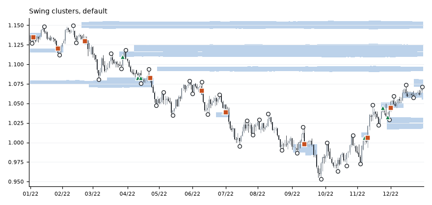

All tests · 2026-11-02 · 7 majors, 2010 to Oct 2023
Failed The detector's zones show no reversal edge.
Rules tested
- Daily candles and a 14-day ATR.
- Swing points need 5 candles on each side, and only count once confirmed.
- Swings within 0.5 ATR of each other group into a zone, which needs at least 2 touches 10 or more candles apart.
- A zone is its swings plus 0.25 ATR each side, and is removed after a daily close 0.5 ATR beyond it.
- A touch is price entering the zone after being at least 1 ATR away.
- The outcome is whether price moves 1 ATR back before it moves 1 ATR onward, on 1-minute candles.
- 200 sets of random levels, shifted 0.5 to 3 ATR, are scored the same way.
Example

Results
| Touches | 1,461 |
| Turned back | 47.8% |
| Random levels | 49.8% |
| Edge | -2.0 points |
| 95% range | -5.3 to +1.2 |
| Pairs beating random | 2 of 7 |
| Periods beating random | 1 of 5 |
What it shows
- No edge: the zones did slightly worse than random levels.
- The range tops out at +1.2, so the required +3 points is ruled out.
- Green triangles turned back 1 ATR first, and orange squares carried on.
Chart library
EURUSD, 2022, real detector output. 1 chart. Click one to enlarge, then use the arrows or arrow keys to step through.